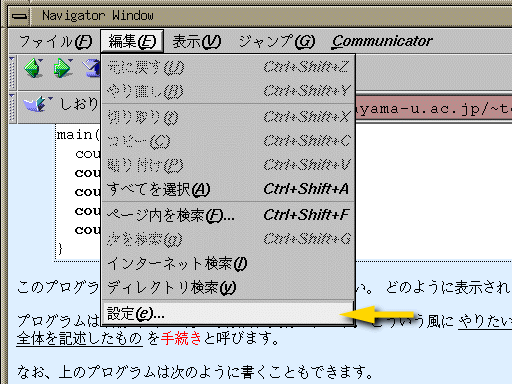
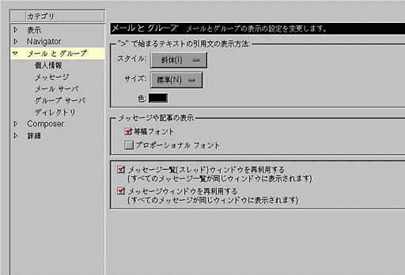
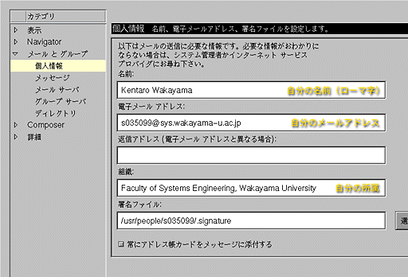
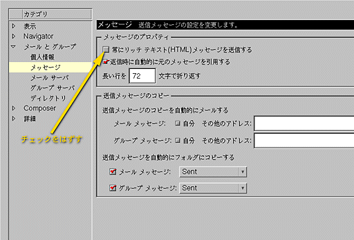
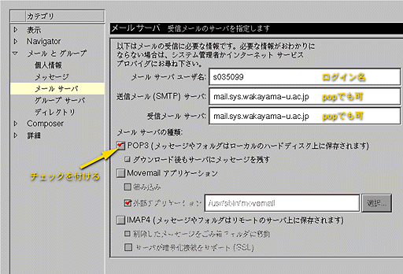
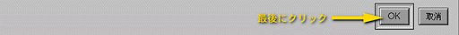

Netscape のメール機能を使ってメールを出すときは、 今一度設定を確認してください。 メニューバーの“編集”から“設定”を選んでください。

設定のダイアログウィンドウで、 “メールとグループ”の項目を開いてください。

“カテゴリ”から“個人情報”を選んでください。

このウインドウの以下の項目を設定してください。
- 名前
- “名前”の欄に自分の名前を書いてください。 名前は日本語でも不可ではないんですが、 できるだけローマ字にしておいてください。
- 電子メールアドレス
- “電子メールアドレス”の欄には自分の電子メールアドレスを書いてください。 ６階の演習室の場合は「ログイン名@sys.wakayama-u.ac.jp」です。
- 組織
- 書きたくなければ空欄のままでも構いませんが、 一応所属を書いておいてください。
次に“カテゴリ”から“メッセージ”を選んでください。

“常にリッチテキスト(HTML)メッセージを送信する” のところのチェックをはずしてください。 次に“カテゴリ”から“メールサーバ”を選んでください。

最初に“メールサーバの種類：”のところにある“POP3 にチェックを付けてください。 そのあと以下の項目を設定してください。
- メールサーバユーザ名
- 自分のログイン名を設定してください。
- 送信メール(SMTP)サーバ
- mail.sys.wakayama-u.ac.jpまたはpopを指定してください。
- 受信メールサーバ
- mail.sys.wakayama-u.ac.jpまたはpopを指定してください。
最後にウィンドウの下の方にある OK をクリックしてください。
